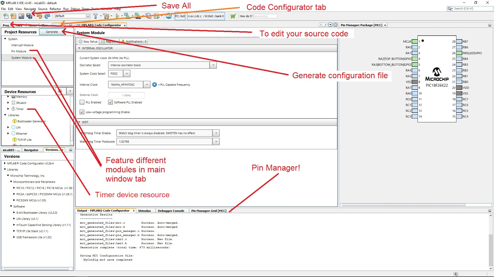
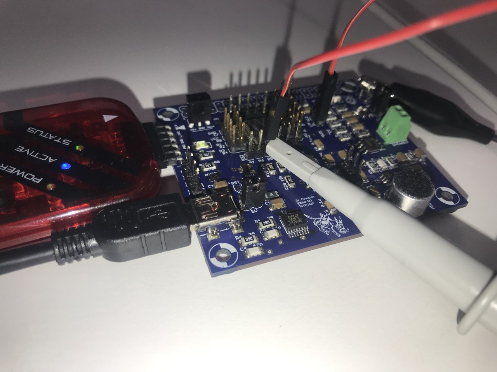

EENG 383
In Lab 3 - Music BoxRequirements
Working in teams of two, read through the following lab activity and perform all the actions prescribed. You do not need to document bullet items. Make a record of your response to numbered items and turn them in a single copy as your teams solution on Canvas using the instructions posted there.Include the names of both team members at the top of your solutions. Use complete English sentences when answering questions. If the answer to a question is a table or other piece of art (like an oscilloscope trace or a figure), then include a sentence explaining the piece of art. Only include your answers, do not include the question-text unless it is absolutely needed.
Objective
The objective of this lab is to introduce you to the MPLAB Code Configurator (MCC) and how to use delays to generate sounds.
External Hardware
Today you will write code that you can interact with through a button (input) and generate musical tones through the speaker (output). You should be familiar with the operation of the buttons from last week's lab. Since this lab is already jam packed with goodness, we will wait until next week's lab to explore the hardware on your development board that converts the low power output from the PIC into a high power signal to drive the speakers.Internal Subsystem
This lab will use one of the GPIO pins as an output driving the speaker and two of the GPIO pins to read the push buttons.In order to use the speaker you need to install a 2 pin jumper (shown below) over the pair of pins 5V (near the USB connector). Leave this jumper in place until you need 5v or want to measure the current consumed by the development board.

We will compare the delay generating paradigm used in last week's lab, having the processor idly execute NOP instructions to create delays, and timers. NOPs are useful in simple applications and where you need to create very brief delays. However, in order to generate more precise delays, or to allow the micrcontroller to perform other work while waiting for the delay to be over, you will need to learn to use timers. While you may question the benefit of the added complexity timers introduce into your code, I hope that you will soon realize that they represent one of the most powerful subsystems in a microcontroller.
Firmware Organization
A microcontroller by itself is not terribly interesting, being not much more than a slow-running processor. Microcontrollers derive their power from the subsystems they contain and the external devices these subsystems can control. In order to be able to interface to as many different external devices as possible, the computer engineers who design microcontrollers make the subsystems as flexible as possible. This means that there are potentially a great number of alternative configurations for each subsystem. When developing an embedded application that interfaces a microcontroller subsystem to an external device, one of the first tasks you must complete is configuring the subsystem.In my experience subsystem configuration is a necessary task that can turn into a time consuming and potentially-frustrating challenge. Thankfully, the folks at Microchips developed the MPLAB Code Configurator (MCC) to address this challenge. Paraphrasing the text in the MPLAB® Code Configurator User’s Guide, MCC is a plug-in tool in MPLAB X which generates drivers (software) for controlling and driving subsystems based on the settings and selections made in the Graphical User Interface. The generated drivers can be used in your program.
Create new project
The first step to using MCC is to create a new project and launch MCC as described in the steps below.- Launch MPLab X
- Close any open project: File → Close All Projects,
- Create a new inLab03 project as you did in Lab 2,
- Click Tools → Embedded → MPLab Code Configurator v4: Open/Close,
- At the MCC Content Manager Wizard screen:
- Click on the blue button "Select MCC Classic" in the center tile,
- On the next page click on the blue "Finish" button
- If the MPLab Code Configurator is not listed then you will need
to install the Code Configurator as follows,
- Tools → Plugins,
- In the Plugins pop-up select the "Installed" tab,
- Type "code" into the search box on the right side of the pop-up,
- Check the "MPLab Code Configurator" check box,
- Click Activate,
- Click Finish in the Plugin Installer pop-up,
- Click OK on any Confirmation dialog pop-ups.
Configure the PIC with MCC
You should use MCC for the remainder of the term for all future projects. Every project in this class will require you to configure the oscillator and I/O pins as shown in the steps below. Consult the figure below the text in case you have difficulty finding some of the selections described.If you installed the plugin correctly, there should be a blue shield icon in the toolbar labeled “MCC”. This is the code configurator. Click the icon and hit “save” when given an option to save your configuration files. See the image below for assistance in locating buttons described in the following instructions.
- In the INTERNAL OSCILLATOR area of the System Module window
- Oscillator Select: Internal oscillator block
- System Clock Select: FOSC
- Internal Clock: 16MHz_HFINTOSC
- Software PLL Enabled: ✓
- In the Pin Manager: Grid [MCC] tab of the console window click on the open lock in the Port A, 2 column and in the GPIO input row. The blue background color should switch to a green closed lock, meaning that RA2 is now locked as an input. The blue open lock one row below (in the output row) should have change color to orange meaning that RA2 is not an output,
- In the Pin Manager: Grid [MCC] tab of the console window click on the open lock in the PortA 3 column and in the GPIO input row,
- In the Pin Manager: Grid [MCC] tab of the console window click on the open lock in the PortB 5 column and in the GPIO output row,
- In the Project Resources area of the project window, click "Pin Module". The editor window will change from the System Module to Pin Module. Click on the Custom Name text box in the RA2 row and change the name of RA2 from "IO_RA2" to "TOP_BUTTON",
- Change the name of RA3 to "BOTTOM_BUTTON",
- Change the name of RB5 to "SPEAKER_PIN",
- In the Pin Module in the Analog column, uncheck analog for RB5 if it is selected,
- In the Device Resources window (at left) scroll down and find the
"Timer" list (has a watch icon). Expand this list and double click
on "TMR1". Two things will happen; the main window will change to
show the TMR1 configuration options and second, TMR1 will appear in the
Peripherals list in the Project Resources area. Use the following to
configure timer 1. Note where you see "✓", it means to put a check
in a box. Where you see "□" it means to leave the check box empty.
If a configuration option is not listed it means that option is unimportant.
- Enable Timer: ✓
- Clock Source: FOSC/4
- Prescaler: 1:1
- Timer Period: 4.096 ms
- Click on the "Generate" button in the Project Resources area of the project manager window. Anytime that you make a change to the configuration you must re-generate the supporting files exported into your project using the "Generate" button. If you have the output console open you will see MCC generating the files you specified in this configuration.

Add source code
In addition to generating the code to configure the PIC, MCC generates a variety of useful function and definitions that you can call from inside your code. In this lab, I have written a simple program that uses some of these definitions. In the steps below, you will add this program to your project.- Start by switching the main project tab from the Project Resources view, back to your project manager view (left-most tab),
- Expand the "Source File" folder,
- Double click the file main.c to open it in the editor window.
- Replace the contents of main.c with inlab03.c
- In main.c, edit the number of NOPs in the microSecondDelay function to correctly generate a microsecond delay. This is necessary because slight changes in the compiler changes the number of NOPs needed.
- What three defined expressions are available for you to write values to the Speaker? Hint, these all manipulate the Latch and contain a set of parentheses.
- What defined expression can you call in your code to get the value of TOP_BUTTON? Hint, it's not TOP_BUTTON_PORT - we want a similar expression that has parenthesis.
- List all the functions that you can call to interact with timer 1.
- What functions does the SYSTEM_Initialize call?
- How does the MCC TMR1_ReadTimer function form the 16-bit timer value from the two 8-bit timer 1 registers?
- List all the calls in main.c to definitions contained in the MCC Generated Header Files. To answer this question, look through all the "#define" statements in the Header Files generated by MCC. Write down any of these "#define" statements that you can find in main.c. For example, main.c calls TOP_BUTTON_GetValue() (from pin_manager.h) so this should be included as part of your answer. Also, all of the #define values are shown in light blue text. Note, some of these #defines are declared in main.c - do not include these, only ones declared in the MCC Generated Header Files.
- List all the calls in main.c to functions contained in the MCC Generated Source Files. To answer this question, look through all the functions declared in the Source Files generated by MCC. Write down any of these function declarations that you can find in main.c. For example, main.c calls TMR1_WriteTimer() (from tmr1.c) so this should be included as part of your answer.
- Given the configuration of the push buttons discussed in a previous lab, when will the instructions inside the while-loop on lines 44-45 be executed, when the top button is being pressed or unpressed?
- When will the instructions on lines 47,48 be executed, when the top button is pressed or when the button is released?
Firmware Operation
Your next step will be to download the firmware into the PIC, then run and observe the behavior of the program. Using MCC does not require you to change this process; so the following steps should be familiar.- Connect the development board to a USB port on the PC,
- Connect the SNAP programmer to a USB port on the PC,
- Connect the SNAP programmer to the development board so that the triangle on the SNAP programmer and the development board align,
- In the toolbar click on the Clean and Build Project icon (hammer and broom). If you get an error, it most likely a result of naming the buttons differently than I described above. Either fix the name of the pins in the code configurator (and re-generate) or modify the names of the pins in the inlab03 code.
- In the toolbar click on the Run Project icon (green arrow pointing right),
- Check the "Do not show this message again" checkbox in the MPLab pop-up and then click OK,
- Three things will now happen that should alert you that the download
is in progress:
- Text will scroll by in the SNAP programmer tab of the console ending with Programming/Verify complete,
- The lower right corner of the MPLab X window you should see "inlab03 (Build, Load)" with a progress bar flashing,
- Add a jumper wire from RB5 to the LPF_in pin. Place a 2-pin jumper over the LPF_out/AMP_in 2-pin header.

Observe output
One of the primary reasons electrical engineers use oscilloscopes is to observe phenomena that are too fast and too small to be observed directly with something like a digital multimeter. In the following steps, you will use the oscilloscope to observe the signal, generated by your program, coming from RB5.| Ch1 probe | RB5 |
| Ch1 ground clip | Dev board ground loop |
| Horizontal (scale) | 1 ms |
| Ch1 (scale) | 1V |
| Trigger type | Edge |
| Trigger mode | Auto |
| Trigger source | 1 |
| Trigger slope | ↑ |
| Trigger level | 1.5V |
- Align Ch 1 on the second lowest reticule. See green text in image below for clairfication,
- Align the horizontal position at the second left-most reticule. See red text in image below for clarification,
- Clear all menus off the bottom of the screen
[↑Back] - Screen shot the screen on USB:
[Save] → Save → Format → 24-bit Bit... (*.bmp) [Save] → Save → Press to Save

- Include the screenshot (saved on a thumbdrive) of the 980Hz note waveform generated while pressing the top button.This will be the note that plays on the first button press. If you missed it, just press the top button a few more times to cycle back around. You can verify that you have the right note by measuring the frequency of your waveform ([Meas] → Add Meas → Type: Frequency → Source 1 → Add Measurement).
- Using the time per division information on the oscilloscope screen shot and
the duration of the waveform (described in divisions), show your calculation
for the period of the waveform on RB5. Invert the period to also determine the
frequency. For example, if your oscilloscope was
set to 250us/division and the waveform had a period of 4.6 divisions, then
your answer would look like:
Oscilloscope set to 250us/division The period of the RB5 waveform is 4.6 divisions 250us -------- * 4.6 divisions = 1,150us 1/1,150us = 869Hz division
Firmware Experiments
Your program uses delays to generate the musical notes in a traditional western music scale. The code to generate notes using TOP_BUTTON is similar to this:
while (TOP_BUTTON_GetValue() == 0) {
microSecondDelay(halfPeriod[i]);
SPEAKER_PIN_Toggle();
} // end pressed button
In order to generate frequencies that correspond to the notes in a
traditional musical scale, you need to understand the mathematical
relationship between a note and its frequency as described in the first
paragraph of the
Equal temperament
wikipedia page. You will use an excel spreadsheet to compute the
halfPeriods (from the code snippet above) of the notes A4 …
D#6. Follow these steps to complete this task.
- Launch excel and select a blank workbook,
- Left click just to the left of the word "Index" in the table below,
- Hold down the left mouse button and drag to the lower right cell in the table (the row with index 31),
- Right mouse click and select "Copy"
- Return to the Excel work sheet. Right click in cell A1,
select "Keep Source Formatting (K)" under "Paste Options".
If this does not work, then you will need to complete the following
red steps.
- Enter "Index", … "Half period (ms)" in cells A1 … E1.
- Enter "0" in cell A2
- Enter "=A2+1" in cell A3
- Select cell A3, click and drag the small green square in the lower right corner of cell A3 down to cell A33. This will reproduce the formula that you typed in cell A3 into cells A4 … A33, except that the "A2" reference will be replaced with the relative reference to the cell above. For example, check that the formula in cell A10 will be "=A9+1".
- Enter the note names in cells B2 … B33,
- Enter "440" in cell C2 and 31000 in cell C33,
- Next you will write an Excel formula to compute the frequency (in Hz) of each note in the table. In cell C3 enter the formula for the next note above 440, using the excel functions "power". Use the "round" function to limit the numerical precision of the cell to 0 significant figures. If you are stuck refer back to the Wiki page for 'Equal temperament'. Hint: you should have something like, "=round(C2*power(?,?),0)" where the "?" are numerical values.
- Select cell C3, click and drag the small green square in the lower right corner of cell C3 down to cell C32. This will reproduce the formula that you typed in cell C3 with a relative replacement of "C2",
- In cell D2 enter the formula for the period of the waveform with the frequency given in cell C2. Use the round function to limit the numerical precision of the fraction to 3 significant figures. Make sure to use units of ms for the period.
- Select cell D2, click and drag the small green square in the lower right corner of cell D2 down to cell D33. This will reproduce the formula that you typed in cell D2 with a relative replacement of "C2",
- In cell E2 enter the formula for half the period of the waveform period in cell D2. Round the numerical precision of the fraction to 3 significant figures. Copy the formula into cells E3 … E33,
| Index | Note | Freq (Hz) 3 sig figs | Period (ms) 3 sig figs | Half period (ms) 3 sig figs | TMR1 cnts |
| 0 | A4 | 440 | 2.273 | 1.137 | |
| 1 | A#4 | ||||
| 2 | B4 | ||||
| 3 | C4 | ||||
| 4 | C#4 | ||||
| 5 | D4 | ||||
| 6 | D#4 | ||||
| 7 | E4 | ||||
| 8 | F4 | ||||
| 9 | F#4 | ||||
| 10 | G4 | ||||
| 11 | G#4 | ||||
| 12 | A5 | 880 | 1.136 | 0.5682 | |
| 13 | A#5 | ||||
| 14 | B5 | ||||
| 15 | C5 | ||||
| 16 | C#5 | ||||
| 17 | D5 | ||||
| 18 | D#5 | ||||
| 19 | E5 | ||||
| 20 | F5 | ||||
| 21 | F#5 | ||||
| 22 | G5 | ||||
| 23 | G#5 | ||||
| 24 | A6 | ||||
| 25 | A#6 | ||||
| 26 | B6 | ||||
| 27 | C6 | ||||
| 28 | C#6 | ||||
| 29 | D6 | ||||
| 30 | D#6 | ||||
| 31 | Ultrasonic | 31,000 |
while (BOTTOM_BUTTON_GetValue() == 0) {
TMR1_WriteTimer(0x10000 - halfPeriodTimer[i]);
PIR1bits.TMR1IF = 0;
while(TMR1_HasOverflowOccured() == false);
SPEAKER_PIN_Toggle();
} // end pressed button
Please note that TMR1 operates identically to TMR0. That means that TMR1 counts up at Fosc/4. Since you configured Fosc = 64MHz, then TMR1 counts up 16,000,000 times a second.
In order to generate frequencies using timer 1 counts, you need to reinterpret the half periods in column E in terms of timer 1 counts. To do this let's start by writing an equation which converts a delay in milliseconds into 1:1 prescaled timer 1 counts.
- Write a dimensional analysis equation to convert a half period delay
in milliseconds into 1:1 prescaled timer 1 counts. Do this using the
following steps:
- Write 16*106 clk over 1 second
- Multiply this by the number of timer 1 counts per clock
- Multiply this by the number of seconds per milliseconds
- Multiply this by a variable X which represents the number of milliseconds in a half period.
- In cell F1 of your excel spreadsheet add "TMR1 cnts"
- In cell F2 enter the formula you derived in the previous question. You should have something like "=E2*?", where "?" is a numerical value.
- Select cell F2, click and drag the small green square in the lower right corner of cell F2 down to cell F33. This will reproduce the formula that you typed in cell F2 with a relative replacement of "E2".
- Export the completed spreadsheet as a PDF as the solution to this
question. To accomplish this, complete the following steps.
From Excel: File → Export → Create PDF/XPS Document. Save the file in your lab03 directory. In Word: Insert → Object → Adobe Acrobat Document
Don't forget the last question below. - Modify the program so that it plays the notes from any of the popular
Kids songs
using the noted from the table above. Demo the application to the
lab instructor or TA.
Got a problem, try a solution
| Issue | Solution |
| Intermittent, crackle sound | Install jumper over power input jumper 5V |
| Speaker makes sound but oscilloscope is not showing a waveform. | Disconnect and then reconnect your oscilloscope probe |
| Speaker makes no sound and RB5 produces no square wave when button is pressed. | Configure RB5 as an output in pin manager and make sure that you have installed a jumper wire from RB5 to AMPin. |
| Speaker makes no sound and oscilloscope probe of screw terminals shows a square wave. | Your LM4862 chip is in backwards. |
| You are making changes to the program, but they do not seems to be affecting your program the way you expect. | You have two projects open |
| You are getting a BUILD ERROR (main.c already defined) when compiling your program | You have two .c files in your project, both have void main(void) { defined in them. |